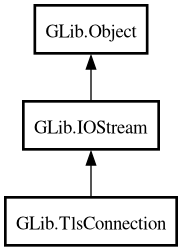

TlsConnection
Object Hierarchy:

Description:
[
CCode ( type_id =
"g_tls_connection_get_type ()" ) ]
[
Version ( since =
"2.28" ) ]
public abstract class TlsConnection :
IOStream
Content:
Properties:
Creation methods:
Methods:
Signals:
Inherited Members:
All known members inherited from class GLib.IOStream
All known members inherited from class GLib.Object